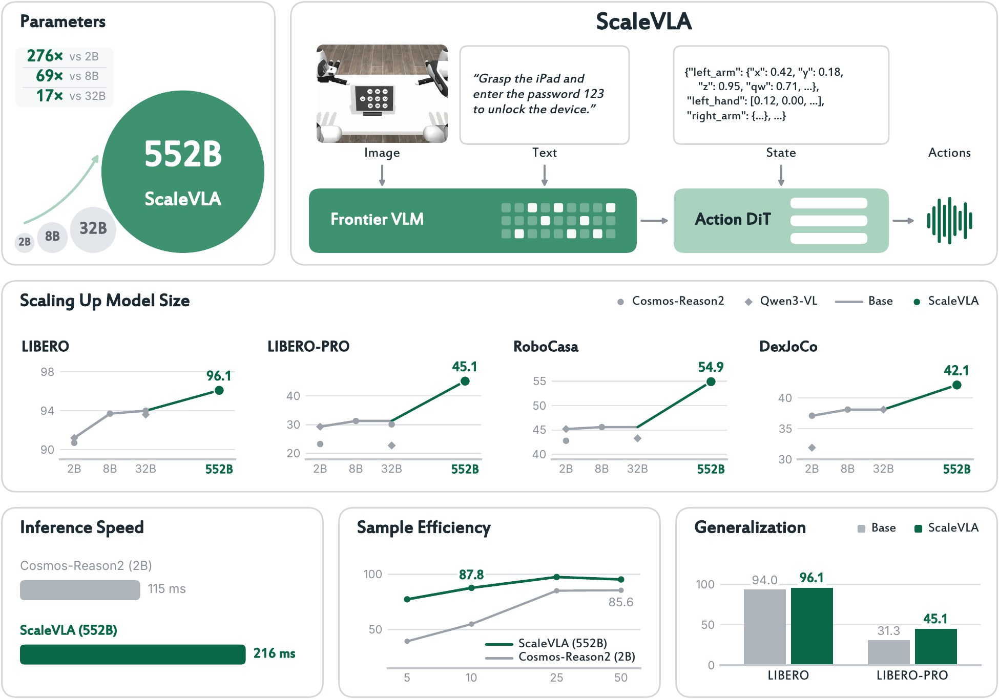
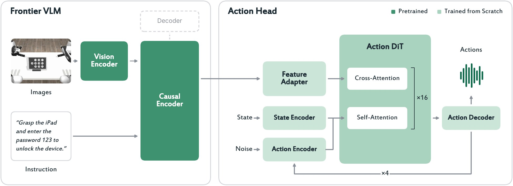
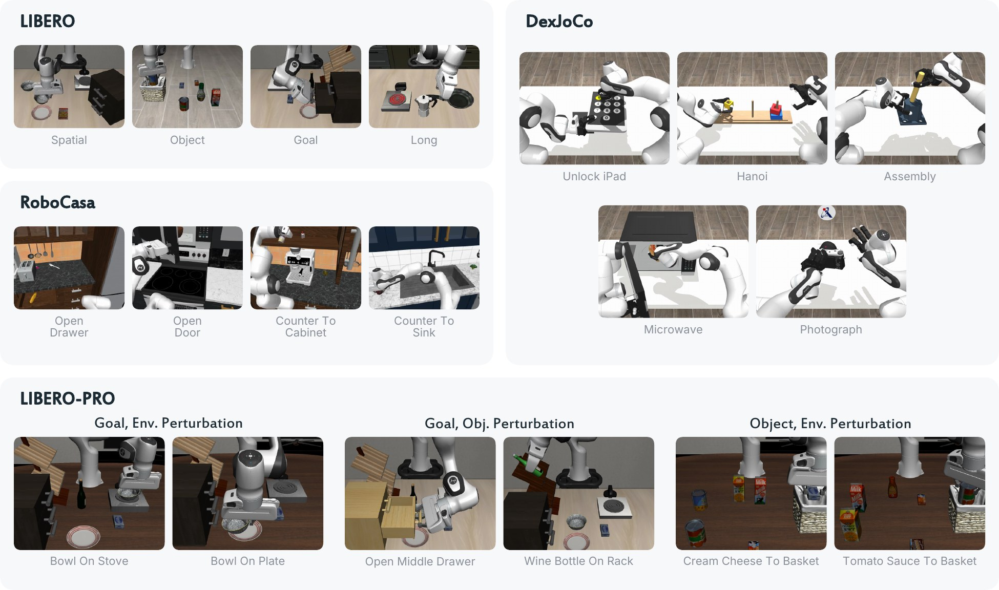
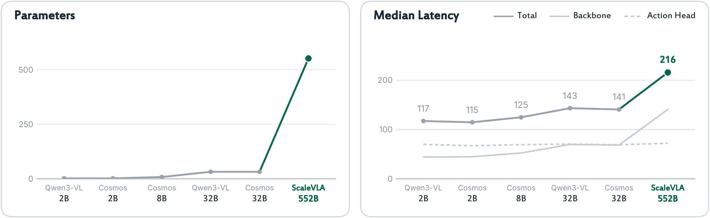

Scaling the backbone from 2B to 552B turns a near miss into a clean insertion: both policies grasp and hand over the charger, but only ScaleVLA aligns and inserts the plug.

Frontier Vision-Language Models (VLMs) such as GPT-6 Astra have demonstrated remarkable capabilities in robot control, suggesting that broad pretraining provides knowledge valuable for physical action. Yet most Vision-Language-Action (VLA) policies still rely on much smaller VLM backbones, leaving this potential largely untapped. We ask whether frontier-scale representations can provide a stronger foundation for robot learning.
We introduce ScaleVLA, which connects a 552B DeepSeek-V4.1-Flash backbone to a trainable action DiT, and scales the VLM backbone from 2B to 552B parameters. We evaluate three fundamental capabilities of robot foundation models. In sample efficiency, just 10 demonstrations outperform a 2B backbone trained with 50 (87.8% vs. 85.6%). In generalization, LIBERO-PRO success reaches 45.1%, compared with at most 31.3% for smaller backbones. In precise manipulation, real-world charger insertion improves from 4/10 to 9/10 successes, with gains concentrated in contact-sensitive alignment. Despite its scale, ScaleVLA achieves 216 ms median latency per action chunk.
Our findings suggest that frontier VLMs can serve not only as reasoning agents, but also as powerful representational foundations for efficient and generalizable robot policies.
ScaleVLA does not reason in text. It reads the representations of a frontier vision-language backbone and maps them directly to continuous actions with a flow-matching action head trained from scratch.

DeepSeek-V4.1-Flash-1017, a 552B mixture-of-experts model. We run its 20-layer causal encoder on the camera images and instruction and read every visual and text token (5120 dimensions). The decoder never runs.
A GR00T N1.7-style head: a feature adapter, state and action encoders, a 32-layer diffusion transformer that cross-attends to the backbone features, and an action decoder, all trained on robot demonstrations.
From 2B to 552B, 276× more parameters. Frontier-scale representations bring higher sample efficiency, stronger generalization and more precise manipulation, while the decoder never runs, keeping latency at 216 ms per action chunk.
LIBERO tests tabletop manipulation, LIBERO-PRO perturbs its objects and scenes, RoboCasa tests kitchen tasks in out-of-distribution scenes, and DexJoCo tests five tasks that require coordinating two dexterous hands.

| Model | Spatial | Object | Goal | Long | Average |
|---|---|---|---|---|---|
| π0 | 96.8 | 98.8 | 95.8 | 85.2 | 94.2 |
| OpenVLA | 84.7 | 88.4 | 79.2 | 53.7 | 76.5 |
| CoT-VLA | 87.5 | 91.6 | 87.6 | 69.0 | 83.9 |
| Qwen3-VL-2B | 98.4 | 98.2 | 90.4 | 77.8 | 91.2 |
| Cosmos-Reason2-2B | 98.8 | 97.6 | 83.2 | 83.2 | 90.7 |
| Cosmos-Reason2-8B | 99.8 | 99.0 | 88.6 | 87.2 | 93.7 |
| Qwen3-VL-32B | 98.8 | 99.4 | 93.2 | 83.0 | 93.6 |
| Cosmos-Reason2-32B | 98.4 | 98.4 | 95.2 | 83.8 | 94.0 |
| ScaleVLA (552B) | 98.6 | 98.6 | 96.8 | 90.2 | 96.1 |
Success rates (%). The first three rows are published results. Our policies train on the full demonstration set of each suite.
| Goal | Object | |||
|---|---|---|---|---|
| Backbone | Env. | Obj. | Env. | Mean |
| Qwen3-VL-2B | 24.2 | 38.4 | 25.2 | 29.3 |
| Cosmos-Reason2-2B | 20.6 | 37.6 | 11.8 | 23.3 |
| Cosmos-Reason2-8B | 32.6 | 37.6 | 23.6 | 31.3 |
| Qwen3-VL-32B | 11.6 | 44.2 | 12.6 | 22.8 |
| Cosmos-Reason2-32B | 19.2 | 38.8 | 32.4 | 30.1 |
| ScaleVLA (552B) | 47.8 | 56.4 | 31.2 | 45.1 |
Success rates (%). The LIBERO policies are tested under environment (Env.) and object (Obj.) perturbations without retraining.
| Backbone | Gen-30 | Gen-100 |
|---|---|---|
| Qwen3-VL-2B | 22.4 | 45.2 |
| Cosmos-Reason2-2B | 23.2 | 42.8 |
| Cosmos-Reason2-8B | 25.6 | 45.6 |
| Qwen3-VL-32B | 25.5 | 43.3 |
| ScaleVLA (552B) | 30.7 | 54.9 |
Success rates (%) with 30 and 100 generated demonstrations per task, tested in out-of-distribution kitchens.
| DP-T | π0.5 | Qwen3-VL-2B | Cosmos-Reason2-2B | Cosmos-Reason2-8B | Qwen3-VL-32B | ScaleVLA (552B) | ||||||
|---|---|---|---|---|---|---|---|---|---|---|---|---|
| Task | Obj. | Obj. | Obj. | Full | Obj. | Full | Obj. | Full | Obj. | Full | Obj. | Full |
| Unlock iPad | 0.0 | 0.0 | 17.3 | 8.7 | 15.3 | 4.7 | 26.7 | 6.0 | 26.7 | 14.0 | 31.3 | 15.3 |
| Hanoi | 8.0 | 4.7 | 11.3 | 8.7 | 24.0 | 4.7 | 24.0 | 13.3 | 24.0 | 10.7 | 28.0 | 14.0 |
| Assembly | 1.3 | 4.0 | 4.7 | 0.0 | 10.0 | 0.7 | 10.7 | 0.0 | 4.0 | 0.0 | 11.3 | 1.3 |
| Microwave | 42.7 | 34.7 | 84.7 | 61.3 | 81.3 | 62.7 | 82.0 | 62.0 | 89.3 | 62.7 | 73.3 | 67.3 |
| Photograph | 28.0 | 7.3 | 41.3 | 32.0 | 54.7 | 30.7 | 47.3 | 24.0 | 46.7 | 22.7 | 66.7 | 24.0 |
| Average | 16.0 | 10.1 | 31.9 | 22.1 | 37.1 | 20.7 | 38.1 | 21.1 | 38.1 | 22.0 | 42.1 | 24.4 |
Success rates (%). One policy per backbone learns all five bimanual tasks under object (Obj.) or full randomization. DP-T and π0.5 are published baselines.
We test the LIBERO policies, without retraining, under the environment and object perturbations of LIBERO-PRO, which check whether a policy holds up outside its training conditions. Every policy drops sharply, but ScaleVLA retains the most: its mean success of 45.1% is about 14 points above the best dense backbone and well above the 23.3–29.3% of the 2B backbones, and it leads under both Goal-suite perturbations. Frontier representations therefore transfer better beyond the training distribution.
Below, rollouts of the 2B backbone and ScaleVLA under LIBERO-PRO perturbations. Full results are in the LIBERO-PRO table above.
In the Plug In Charger task from RoboDojo, the right arm grasps a phone charger and hands it over, and the left arm aligns the plug with a power-strip socket, inserts it and releases it. The policies observe a head camera and two wrist cameras on a bimanual ARX X5.
All three policies reach the socket; only ScaleVLA inserts the plug.
| Successes | In-domain, median (s) | Latency | |||
|---|---|---|---|---|---|
| Policy | In-domain | OOD | Insertion | Completion | (ms) |
| Cosmos-Reason2-2B + Action Head | 4/10 | 5/15 | 85.9 | 147.1 | 311 |
| π0.5 + Action Head | 8/10 | 7/15 | 81.2 | 132.0 | 262 |
| ScaleVLA (552B) | 9/10 | 8/15 | 58.1 | 114.4 | 384 |
Ten in-domain and fifteen out-of-distribution (OOD) trials per policy. Times are medians over successful in-domain trials; latency is the median round trip per action chunk at the robot client.
We vary the number of demonstrations per task, N ∈ {5, 10, 25, 50}, on LIBERO Goal and Long. ScaleVLA consistently outperforms smaller backbones in low-data regimes, with the most pronounced gains when demonstrations are scarce. With only five demonstrations per task, scaling the backbone from 2B to 552B nearly doubles the success rate on LIBERO-Goal, from 39.4% to 77.4%. ScaleVLA needs only one fifth of the demonstrations to surpass the 2B backbone on LIBERO-Goal (87.8% with 10 vs 85.6% with 50).
| Goal | Long | |||||||
|---|---|---|---|---|---|---|---|---|
| Demos per task | 2B | 8B | 32B | 552B | 2B | 8B | 32B | 552B |
| 5 | 39.4 | 60.6 | 61.2 | 77.4 | 24.0 | 40.0 | 37.6 | 62.2 |
| 10 | 55.0 | 70.0 | 83.0 | 87.8 | 56.0 | 65.2 | 66.4 | 75.0 |
| 25 | 85.2 | 83.0 | 90.4 | 97.6 | 69.6 | 65.6 | 83.6 | 84.6 |
| 50 | 85.6 | 88.6 | 95.2 | 95.4 | 82.4 | 87.2 | 83.8 | 86.8 |
LIBERO success rates (%) with N demonstrations per task. The 2B, 8B and 32B backbones are Cosmos-Reason2 models; 552B is ScaleVLA.
The sparse mixture-of-experts backbone activates only a subset of its experts per token, and the causal encoder runs once per action chunk. With four H200 GPUs, ScaleVLA keeps latency in the hundreds of milliseconds per chunk: 276× the parameters of Cosmos-Reason2-2B at 1.9× its median latency per action chunk.

| Median latency on RoboCasa (ms) | |||||
|---|---|---|---|---|---|
| Backbone | GPUs | Tokens | Backbone | Action head | Total |
| Qwen3-VL-2B | 1 | 212 | 44.0 | 69.8 | 117.2 |
| Cosmos-Reason2-2B | 1 | 212 | 44.7 | 67.1 | 114.7 |
| Cosmos-Reason2-8B | 1 | 212 | 52.3 | 69.3 | 124.8 |
| Qwen3-VL-32B | 1 | 212 | 69.7 | 70.5 | 143.3 |
| Cosmos-Reason2-32B | 1 | 212 | 68.4 | 69.0 | 140.7 |
| ScaleVLA (552B) | 4 | 568 | 140.7 | 72.1 | 215.8 |
Medians per action chunk on H200 GPUs.
@article{yu2026scalevla,
title = {ScaleVLA: Scaling Vision-Language-Action Models to 552 Billion Parameters},
author = {Yu, Ruixi and Liu, Dairu and Chen, Xuchuan and Qi, Zekun and Li, Zekai and Cao, Zhuo
and Niu, Luyang and Zhang, Yingsheng and Liang, Sikai and Fan, Ke and Wang, He and Yi, Li},
journal = {arXiv preprint arXiv:2611.21607},
year = {2026},
url = {https://arxiv.org/abs/2611.21607}
}